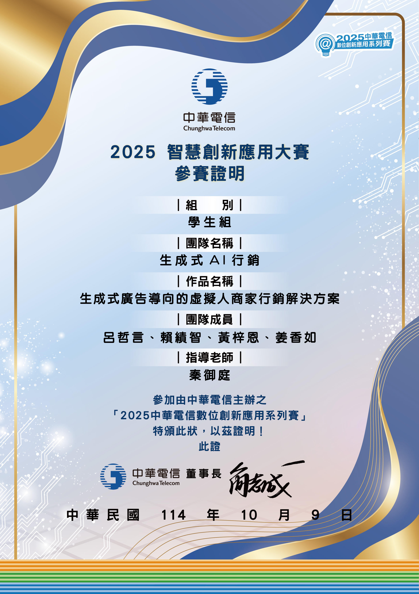
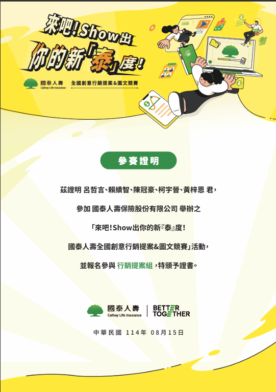

05 / COMPETITIONS
競賽與提案
以競賽時程為約束，完成問題定義、AI 架構收斂與提案整合，將跨域情境轉為可評審的系統方案。
05
跨域 AI 方案
生成式 AI、RAG 與影音生成
- 《連線幸福未來》即時問答、多風格影片生成與雲端服務整合｜中華電信數位創新應用大賽
- 《虛擬人商家行銷解決方案》生成式廣告與虛擬人內容流程｜中華電信數位創新應用大賽
- 《婚宴 RAG 與影片生成系統》知識問答、多風格影片生成與產學情境整合｜資訊應用服務創新競賽
- 《智慧婚禮系統》知識檢索與多風格影片生成提案｜AIGO 淬煉實戰盃
Agentic RAG、智慧行銷與教育應用
- 意圖驅動智慧旅遊Agentic RAG 與旅遊資料融合提案｜ITA 智慧旅遊程式創意提案競賽
- 全國創意行銷提案行銷提案組參賽｜國泰人壽全國創意行銷提案暨圖文競賽
- 《大學好夥伴 College Buddy》智慧教育應用作品｜全國創意與智慧科技競賽
參賽紀錄與佐證



